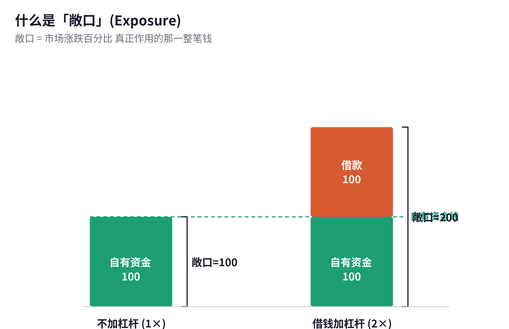
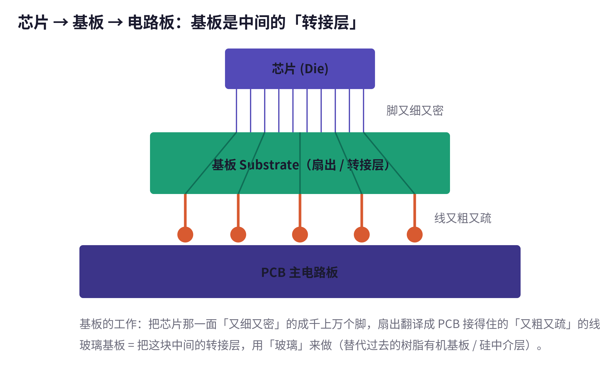
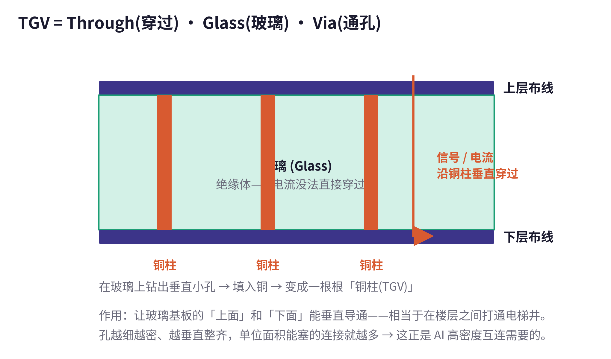
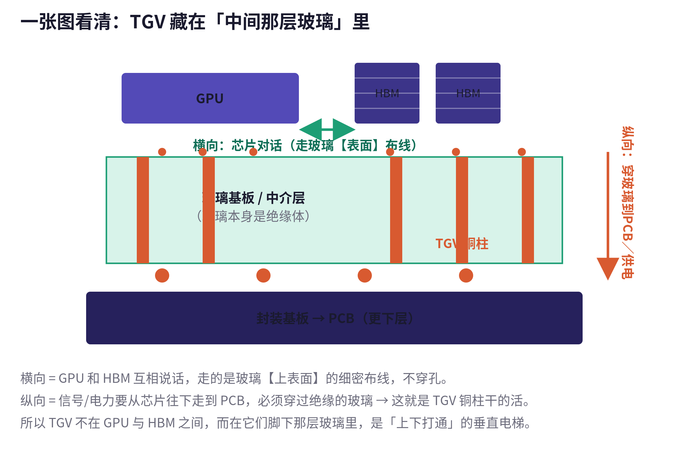
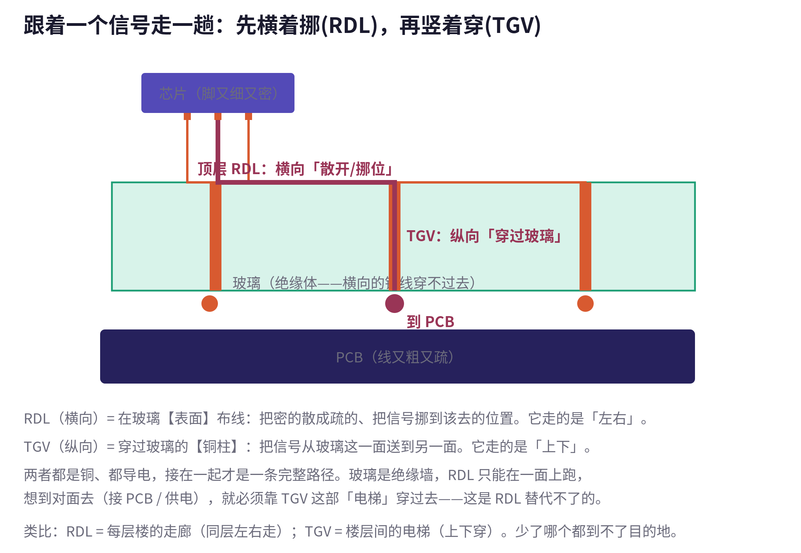
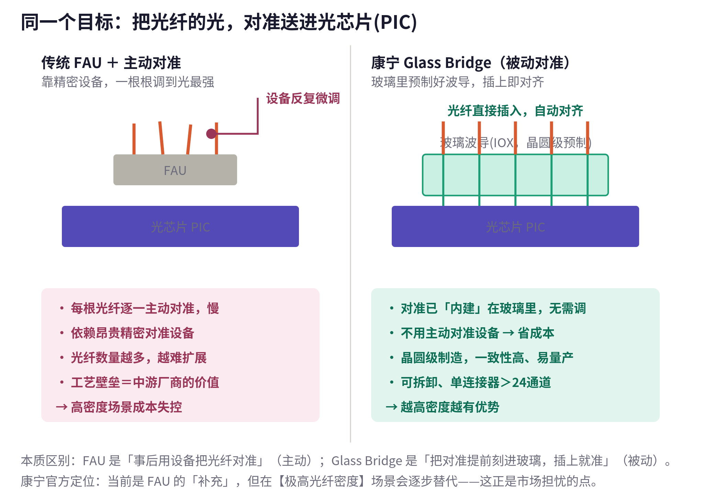
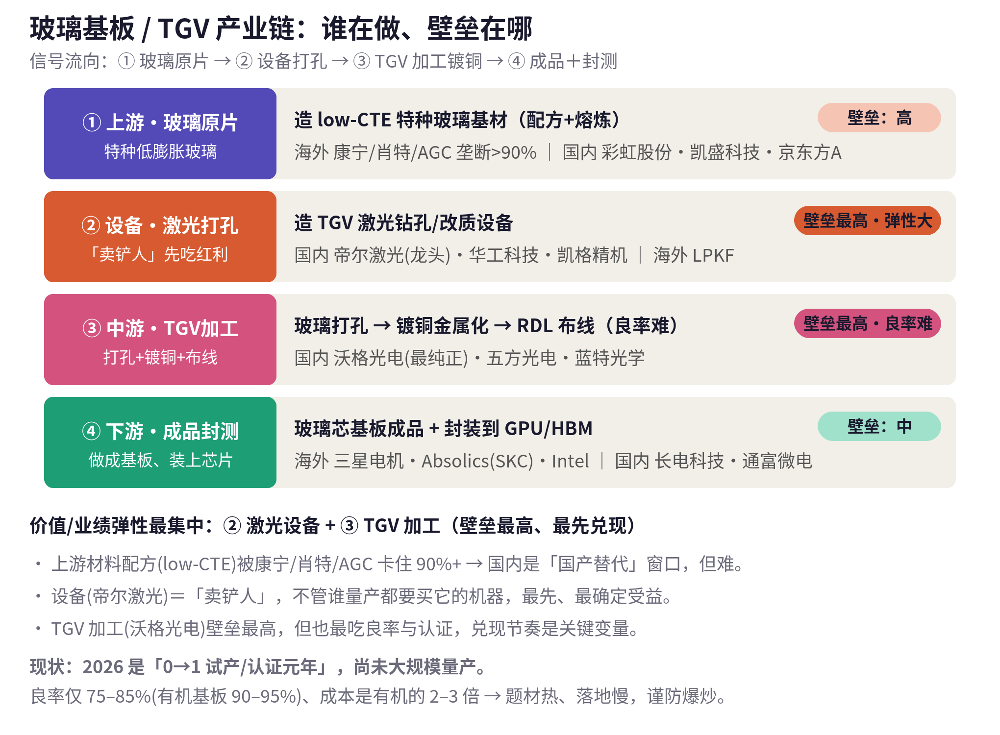

AI 算力投资学习笔记
从杠杆与敞口，到玻璃基板、TGV 与 CPO 光互连
费曼式系统梳理 · 含全部配图与产业链标的
整理日期：2026 年 6 月
导读
这份文档把一连串看似零散的问题，串成了一条完整的逻辑链：先从韩国股市的剧烈波动，弄懂「杠杆」与「敞口」到底是什么；再用「追趋势 vs 赌赔率」的框架，看懂康宁与诺基亚两类 AI 投资思路；接着深入芯片的「身体里」，搞清楚先进封装的玻璃基板与 TGV；然后理解一次让 A 股 CPO 板块大跌的技术事件——康宁 Glass Bridge；最后回到投资视角，把整条产业链上「谁在做、价值卡在哪、哪些 A 股与美股标的对应受益或受损」一次性摊开。
全篇坚持「费曼小白」的讲法：每个概念先用大白话和比喻讲清「是什么、为什么」，再上数据和术语；适合对比的地方用表格呈现；关键事实标注了来源。文中每一张示意图都嵌在它所解释的段落旁边，并配有图注，方便对照阅读。
提示：本文为学习与信息梳理，不构成任何投资建议。涉及的个股、数据与产业进度变化很快，做决策前请自行核对最新信息。
目录
1.2 杠杆 ETF 规模「500 亿美元」：标的、数据源与口径 5
1.4 掉期市场超负荷：如何推高融资成本、逼资金转向现货 7
2.2 追趋势：康宁 Corning（为什么趋势在它身上） 9
第四部分 CPO 光互连：康宁 Glass Bridge 的冲击 16
4.2 Glass Bridge 如何运作（三大特性） 16
4.3 Glass Bridge vs 传统 FAU：本质区别 17
5.3 跷跷板：CPO 受压 vs 玻璃基板受益（A 股 + 美股/全球） 20
第一部分 杠杆、波动与市场结构
这一部分的起点，是一段对韩国 KOSPI 的评论：它说韩国股市成了全球 AI 交易的「杠杆版」，波动剧烈但几乎无回报，市场结构脆弱性显著上升，压力主要来自杠杆 ETF 规模膨胀到约 500 亿美元、再平衡时加速抛售，以及掉期市场超负荷。下面把其中每个概念拆开讲。
1.1 「波动剧烈但几乎无回报」与波动率损耗
直观理解没错：指数今天涨、明天跌，来回大幅震荡，但拉长看净值原地踏步，买入持有几乎不赚钱——过程惊心动魄，结果一场空。
但对杠杆 ETF 还有一层更关键的机制，叫「波动率损耗」(volatility decay)。杠杆 ETF 追踪的是「每日涨跌幅的 2 倍」，不是「区间累计涨幅的 2 倍」。在震荡行情里，每日复利会持续侵蚀净值。
举例：指数第一天 +10%、第二天 −9.09%，正好回到原点（0 回报）；但 2 倍杠杆 ETF 第一天 +20%、第二天 −18.18%，最终是 1.2×0.818≈0.98，亏了约 2%。震荡越剧烈、持续越久，杠杆产品亏得越多。所以「无回报」对指数，对杠杆 ETF 持有者其实是「负回报」。
这是不是「被操纵」？要区分两个词：不是「操纵」(有人蓄意控盘)，而是「被杠杆主导/放大」。这种形态反映的是市场结构问题——大量资金涌入杠杆产品后，产品自身的机械式买卖会自我强化涨跌，让波动被动放大，而非某个庄家在背后坐庄。它是「结构脆弱」，不是「有人操盘」。
1.2 杠杆 ETF 规模「500 亿美元」：标的、数据源与口径
指哪些标的？KOSPI 本身是指数不能直接买。这里说的是一篮子在韩国上市、做多/做空韩国资产并带杠杆的 ETF，主要包括：
KODEX 레버리지（2 倍做多 KOSPI200）
KODEX 200선물인버스2X（「곱버스」，−2 倍做空 KOSPI200 期货，韩国成交量常年第一）
KODEX 코스닥150레버리지（2 倍做多创业板 KOSDAQ150）
TIGER 반도체TOP10레버리지（2 倍做多韩国半导体龙头，直接押注三星、SK 海力士）
以及近年新增的单只个股 2 倍杠杆 ETF（如三星、SK 海力士的杠杆产品）
数据源：「约 500 亿美元」来自摩根大通(JP Morgan)的估算——与韩国标的挂钩的杠杆 ETF 资产已膨胀至约 500 亿美元，相关「gamma 缺口」可能超过 10 亿美元；该数字被彭博、Korea JoongAng Daily 等媒体引用。它是机构估算值，不是官方统计。
衡量的是什么口径？它是针对韩国本土市场的口径——指在韩国挂牌、跟踪韩国资产的杠杆 ETF 的总规模，不是在美股平台、也不是全球 AI 交易里的占比。其意义在于：这是一笔高度集中、且每天都必须机械调仓的资金；因为是 2 倍杠杆＋每日再平衡＋高度集中在芯片股，回调时产生的被动卖压会被放大数倍，边际冲击远超名义规模。叠加韩国散户融资余额今年冲到约 38.5 万亿韩元的纪录高位，进一步放大了脆弱性。
来源：Korea JoongAng Daily；Sherwood News；Upstox（见文末资料来源）。
1.3 再平衡机制：为什么回调时「加速抛售」
杠杆 ETF 为了维持「固定 2 倍杠杆」，每个交易日收盘前都必须调整持仓，而调整方向天然是「追涨杀跌」的：
市场下跌时：基金资产缩水但杠杆敞口相对变大(超过 2 倍)，为拉回 2 倍，它必须卖出标的→在下跌中再砸盘。
市场上涨时：它需要买入加仓→在上涨中再追高。
用数字说明：假设净资产 100、持有 2 倍敞口=200。指数当天跌 10%，敞口亏 20，净资产变 80，但敞口名义价值变 180，杠杆比变成 180/80=2.25 倍。为回到 2 倍(应为 80×2=160)，它必须再卖掉 20 的敞口。也就是说，跌得越多，被迫卖得越多。当全市场约 500 亿杠杆 ETF 同向操作时，就形成「下跌触发卖出、卖出加剧下跌」的负反馈，临近收盘集中爆发(即 gamma 缺口风险)。
1.4 掉期市场超负荷：如何推高融资成本、逼资金转向现货
掉期(swap)是杠杆 ETF 和结构化产品获取杠杆敞口的核心工具。基金往往不直接买两倍的股票，而是和券商签总收益互换(total return swap)等衍生合约来「借」到杠杆敞口；券商作为对手方，再去现货/期货市场对冲风险。
「基础设施超负荷」的意思是：当大量资金涌入这类杠杆产品，对掉期合约的需求激增，而提供对冲的券商资本、风控额度、市场容量有限，于是这套「互换＋对冲」的管道被挤爆。后果有两条：
推高融资成本：对手方稀缺、风险变大，提供掉期的一方会要求更高费用/利差，等于杠杆资金的「借钱成本」上升。
逼资金转向现货：当通过掉期加杠杆太贵或额度不够时，一部分资金只能改为直接买入现货股票，进一步推高现货端的集中度与波动。
1.5 彻底理解「敞口」(Exposure)
一句话定义：敞口 = 你下注的那笔钱的「全部金额」，不管是自己的还是借来的，只要它会随市场涨跌而赚赔，就算进敞口。
「敞」就是「敞开、暴露」——敞口 = 你暴露在市场风险里的钱有多少。市场涨跌的百分比，是作用在这一整笔钱上的。打牌下注的比方：你有 100 元自己押，敞口=100；你又借 100 凑成 200 押上去，敞口=200——借来的 100 也在桌上跟着涨跌，所以也算进敞口。这就是「2 倍杠杆」的真正含义：敞口(200)是自有资金(100)的 2 倍。

图 1 敞口 = 整根柱子（自有资金＋借款）；两根柱子的自有资金一样多，加了借款后敞口翻倍。
为什么跌 10% 杠杆会从 2 漂到 2.25？关键在于「借来的钱(负债)是固定的，不跟着一起亏」。敞口 200＝自有 100＋借款 100。市场跌 10%，砸的是整根柱子，亏 200×10%=20；但借款 100 一分不少要还，于是 20 全从自有资金里扣→自有 100→80。结果敞口只缩水 10%(200→180)，本金却缩水 20%(100→80)，分母缩得更快，杠杆比自然升到 180/80=2.25。
直觉纠偏：「本金跌幅是市场的 2 倍」是对的(市场 −10%、本金 −20%)；但「本金跌幅 2 倍」和「杠杆比保持 2 倍」是两码事。杠杆比是某一时刻的快照比例，会随价格漂移，因为负债是常数、不跟着变。按揭买房同理：首付 100 万、贷款 100 万买 200 万的房，房价跌 10% 到 180 万，你仍欠 100 万，净值变 80 万，杠杆升到 2.25 倍——房价小跌就可能资不抵债，原理一模一样。
第二部分 美股 AI 投资主线：追趋势 vs 赌赔率
一段投资群聊里出现了一个有用的框架：「如果追趋势买康宁，如果赌赔率买诺基亚」。这两个词是看懂两类 AI 投资思路的钥匙。
2.1 两种思路：追趋势 vs 赌赔率
| 维度 | 追趋势（确定性） | 赌赔率（预期差） |
| 买什么 | 主线已被验证、需求肉眼可见、确定性高的票 | 还没被市场充分认可、现在便宜、兑现弹性大的票 |
| 代价/风险 | 大家都看明白了，已涨不少，估值偏贵、赔率一般 | 胜率较低、不确定性大，靠预期被修正才赚钱 |
| 赚的是 | 确定性的钱 | 低估值的弹性 + 催化剂(如下月财报) |
| 对应标的 | 康宁 Corning (GLW) | 诺基亚 Nokia (NOK) |
群里另一句「现在是高确定性但低赔率」点破了关键：康宁这类已经站在风口上的，确定性满分，但赔率被买贵了。
2.2 追趋势：康宁 Corning（为什么趋势在它身上）
核心一句话：康宁是 AI 数据中心的「光纤/光连接卖铲人」，AI 算力越扩张，它的东西用得越多，而且需求已实打实变成订单。
AI 数据中心里成千上万颗 GPU 要高速通信，靠的是海量光纤和光连接器，康宁是全球最大供应商之一，被称为「AI 的神经系统」。这条逻辑已变成签字大单和加速的财报：
与 Meta 签最高约 60 亿美元多年光纤供货协议；近期拿下亚马逊数据中心大单，并披露两笔体量相当的超大客户合同。
拿下英伟达作为光学合作伙伴(英伟达出资约 5 亿帮其在美建 3 座光学工厂)，并宣布把美国光连接产能扩约 10 倍。
2026 年一季度光通信收入同比 +36% 至约 18.5 亿美元；公司上修延长「Springboard」计划，目标 2028 年年化营收 300 亿、2030 年 400 亿美元。
受此推动，康宁股价 2026 年至今已涨约 100%+(部分口径自 2025 年中以来超 200%)。
风险(赔率低的代价)：故事已被反复定价，股价翻倍后估值不便宜，连 Morningstar 都提醒「AI 光纤热潮是真的，但股价可能有点过热」。追趋势买它，赌的是趋势继续、它能撑住高估值；一旦 AI 资本开支放缓或财报不及预期，高位回撤也更大。
来源：Reuters/IndexBox；StocksToTrade；Fierce Network；Momoview；Morningstar（见文末资料来源）。
2.3 赌赔率：诺基亚 Nokia（三条逻辑）
诺基亚是「困境反转＋估值重估」的博弈，叠加「下月财报可能漂亮」的催化剂。按三点拆：
Infinera 光网络：2025 年 2 月完成收购，从「卖 5G 基站的传统设备商」挤进 AI 数据中心光连接(DCI)赛道；与康宁(卖光纤)不同，它卖的是光传输设备与相干光系统。
收购磷化铟(InP)厂：随 Infinera 拿到加州圣何塞工厂。磷化铟是高速光半导体的关键衬底，CEO 称需求未来「可能增长 100–1000 倍」；这意味着诺基亚做了垂直整合，握住光器件最上游的稀缺材料，壁垒硬。
AI 云大幅上涨：一季度 AI/云客户净销售同比 +49%，占集团约 8%，单季新增订单超 10 亿欧元，已拿下 OpenAI、CoreWeave；2025 年 10 月英伟达投资约 10 亿美元；公司上调 2026 指引(光网络+IP 合并增速由 10–12% 上调到 18–20%)。
要泼的冷水：诺基亚过去一年已涨约 160%+，trailing PE 约 78 倍并不便宜(高是因转型期利润被压)。当初相对康宁是「低确定性、高赔率」，但一路涨上来后赔率已被消化不少；现在上车更多是赌「重估再走一段＋财报兑现」，下行风险是高估值＋已大涨会放大回撤。
来源：Motley Fool；BigGo Finance；QuiverQuant；Yahoo Finance（见文末资料来源）。
第三部分 先进封装基础：玻璃基板与 TGV
要看懂后面 Glass Bridge 与玻璃基板的投资逻辑，先得弄懂芯片「身体里」两个基础概念：基板，以及 TGV。
3.1 什么是「基板」(Substrate)
芯片上有成千上万个引脚，又细又密；最底下的 PCB 主板线路又粗又疏，两者根本接不上(好比把一束头发丝直接焊到几根筷子上)。基板就是夹在中间的「转接板/翻译层」，任务是把芯片那面又细又密的脚，扇出(fan-out)、放大、重新排布成 PCB 接得住的又粗又疏的线路。

图 2 芯片→基板→PCB：基板把「又细又密」的芯片脚，扇出转接成「又粗又疏」的 PCB 线路。
玻璃基板 = 把这块中间转接层改用玻璃来做。过去主要用两种材料：
| 维度 | 有机基板(树脂/ABF) | 硅中介层(Si interposer) | 玻璃基板 |
| 成本 | 便宜、成熟 | 贵 | 可做大板摊薄成本 |
| 精度/平整 | 材质软、受热翘曲 | 精度极高 | 又平又硬、几乎不变形 |
| 尺寸 | 做不大、不够精细 | 尺寸做不大 | 可做很大方板(panel) |
| 电学 | — | 硅会漏电、耗电 | 损耗低、信号快 |
在 AI 芯片越做越大、引脚越来越多、速度越来越高时，玻璃基板被看成下一代「地基」的有力候选——这就是「正处于产业化突破关键节点」的背景。
3.2 TGV 是什么：T、G、V 分别代表什么
TGV = Through(穿过) · Glass(玻璃) · Via(过孔)，中文叫「玻璃通孔」。Via 是封装里的专有名词，指一个垂直的电气连接通道，也就是连通上下两层的「竖井」。合起来就是：穿过玻璃的垂直导电通孔。
为什么非要它？因为玻璃是绝缘体，电流没法直接从玻璃这一面穿到另一面。可基板需要「上下导通」(上面接芯片、下面接 PCB)，于是在玻璃上钻出一根根极细的垂直小孔，再填满铜做成「铜柱」，信号就能顺着铜柱垂直穿过。比方：玻璃是楼板，TGV 就是楼板里打通的(灌了铜的)电梯井。

图 3 TGV 剖面：在绝缘的玻璃上钻孔、填铜成「铜柱」，让信号/电流垂直穿过到另一面。
工艺难点全在那个「孔」：要打得又细、又深、又垂直、又密，还不能让脆玻璃裂(这是产业化最难啃的地方)。孔越细越密，单位面积能塞的连接越多——这正是 AI 高密度互连需要的。
3.3 TGV 到底在哪一层
一个常见的困惑：TGV 是在 GPU 和 HBM「之间」吗？不是。芯片在上、玻璃在中、PCB 在下，TGV 就藏在中间这层玻璃里。GPU 和多颗 HBM 是并排坐在玻璃「上表面」，它俩之间是横向对话(走玻璃表面的细布线)；而 TGV 管的是纵向——从芯片往下穿过玻璃，通到 PCB(以及给芯片供电)。

图 4 TGV 的位置：横向(芯片对话)走玻璃表面；纵向(到 PCB/供电)穿过玻璃里的 TGV 铜柱。
3.4 RDL 与 TGV 的区别：横向 vs 纵向
既然扇出层(RDL)本身就是铜线、也导电，为什么还要 TGV？答案在「方向」二字。

图 5 一个信号的完整路径：先用顶层 RDL 横向「散开/挪位」，再用 TGV 纵向「穿过玻璃」到 PCB。
| 维度 | RDL(重新布线层) | TGV(玻璃通孔) |
| 方向 | 横向(左右) | 纵向(上下) |
| 位置 | 贴在玻璃表面的薄铜层 | 穿过玻璃厚度的铜柱 |
| 作用 | 把密的散成疏的、把信号挪到该去的位置(扇出) | 把信号从玻璃这一面送到另一面 |
| 类比 | 每层楼的走廊 | 楼层之间的电梯 |
RDL 只能在玻璃「一个面」上横向跑，跨不过绝缘的玻璃到对面去；要「上下导通」(接 PCB/供电)，只能靠 TGV。两段铜接在一起，才是一条走得通的线：芯片脚→顶层 RDL(横向挪位)→TGV(纵向穿玻璃)→底层 RDL→焊球→PCB。一句话：RDL 管「左右」，TGV 管「上下」，缺一不可。
第四部分 CPO 光互连：康宁 Glass Bridge 的冲击
2026 年 6 月 26 日，A 股 CPO 概念板块单日大跌超 6%，「易中天」齐跌、多只个股跌停。导火索是康宁 6 月 24 日在首尔发布的 Glass Bridge 玻璃光互连平台。这一部分讲清它怎么运作、和 FAU 的本质区别，以及对相关公司的影响。
4.1 CPO / FAU / PIC 耦合是什么
在共封装光学(CPO)架构里，光纤与光子集成电路(PIC)之间的耦合，主要依赖光纤阵列单元(FAU)和精密主动对准设备完成——这一环工艺复杂、制造成本高，是众多 CPO 供应链企业的核心价值所在。难点在「对得准」：光纤芯只有几微米，差一点光就漏掉了。
4.2 Glass Bridge 如何运作（三大特性）
思路反过来：把对准「提前刻进玻璃」。康宁用玻璃离子交换(IOX)工艺，在晶圆级就把一条条光波导预先精准刻在玻璃里(位置、间距在制造时已定死、对齐好)。用时光纤往这块预制玻璃上一插，光自然走进对好的通道，不需要设备再动态校准——这叫被动对准(passive alignment)。
晶圆级制造：核心元件基于晶圆级工艺，用 IOX 波导实现被动对准，降低复杂度、支持高产量下的一致性，是成本效益量产的关键。
标准化 TMT 物理接触接口：可重插拔，能与现有光学生态自然集成——并非完全颠覆，而是在既有标准上扩展。
可拆卸高密度连接器：单连接器支持 24+ 光通道，间距可定制，便于装配、测试与返工。
4.3 Glass Bridge vs 传统 FAU：本质区别

图 6 同一目标(把光对准送进 PIC)的两条路线：FAU 主动对准 vs Glass Bridge 被动对准。
| 维度 | 传统 FAU + 主动对准 | 康宁 Glass Bridge(被动对准) |
| 怎么对准 | 造好后用精密设备一根根调到光最强 | 对准提前刻进玻璃，插上就准 |
| 要不要设备 | 依赖昂贵主动对准设备 | 不需要主动对准设备 |
| 量产性 | 光纤越多越难、成本失控 | 晶圆级批量复制，一致性高 |
| 高密度场景 | 适用性逐步收窄 | 越高密度越有优势 |
| 产业含义 | 工艺壁垒＝中游厂商价值 | 壁垒被「标准件化」削弱 |
一句话：FAU 是「事后用设备把光纤对准」(主动、靠设备、难规模化)；Glass Bridge 是「在玻璃里提前把对准做好，插上就准」(被动、免设备、像印刷一样批量复制)。它把又贵又慢的「主动对准工序」变成了晶圆厂里的标准件——这就是市场恐慌的根源。
别过度解读：康宁官方把 Glass Bridge 定位成对 FAU 的「补充」，不是马上完全替代——传统 FAU 在现在多数场景仍有效，只是在光纤数量极高的最前沿场景，FAU 越来越吃力，Glass Bridge 正好补上。所以是「长期趋势方向＋短期情绪杀」的组合。
来源：华尔街见闻/富途牛牛《康宁官方详解 Glass Bridge 如何运作》；康宁官方技术文件(见文末资料来源)。
4.4 对奇景光电 Himax(HIMX)的影响分析
先纠正定位：奇景光电(Himax, HIMX)是台湾、纳斯达克上市公司，不是 A 股；它在 CPO 里的角色不是做主动对准设备，而是用 WLO(晶圆级光学)+纳米压印技术，做 FAU 里的微透镜/耦合光学元件，是 FOCI(上诠)FAU 的独家 WLO 元件供应商，而 FOCI 的 FAU 目前在英伟达 CPO 架构里拿到主力份额。
方向上：Himax 站在「FAU+透镜耦合」这条路线上，正是 Glass Bridge 想替代的那条，所以方向上是潜在负面。
但现在不构成实质利空，要打折扣：
近一两年 Himax 反而吃 CPO 放量的顺风——FOCI FAU 已设计进英伟达架构，其 CPO 方案目标 2026 量产。
Glass Bridge 自己还没被证明能高密度量产；康宁官方也只定位为 FAU 的「补充」。
替代是渐进的，且 CPO 总盘子在快速变大，初期多种架构并存。
Himax 大头仍是显示驱动 IC，CPO 占比小，冲击更多在估值/叙事层面而非当期利润。
结论：方向上是悬在 Himax(及整条 FAU 耦合链)头上的长期路线替代风险，是「叙事杀」的来源；但现在更像需要持续跟踪的远期/情绪风险，而非已兑现的基本面利空。(信息梳理，非投资建议。)
来源：康宁 GlassBridge 官方页；Himax 官方公告(2026/01)；CommonWealth；Sahm Capital（见文末资料来源）。
第五部分 产业链与投资标的全景
5.1 玻璃基板 / TGV 产业链四环
这次事件还触发了资金从「CPO 光组件」撤离、涌向「玻璃基板」主线的跷跷板。先看玻璃基板/TGV 整条产业链谁在做、价值卡在哪。

图 7 玻璃基板/TGV 产业链四环：上游材料、设备、中游 TGV 加工、下游成品封测，及各环节壁垒。
① 上游·玻璃原片：造 low-CTE 特种玻璃。海外康宁、肖特、AGC 垄断 90%+ 配方与熔炼；国内彩虹股份、凯盛科技、京东方A 做替代。壁垒高、国产化最难。
② 设备·激光打孔(卖铲人)：造 TGV 激光钻孔设备，最先、最确定赚钱。国内龙头帝尔激光，另有华工科技、凯格精机；海外 LPKF。
③ 中游·TGV 加工：玻璃打孔+镀铜金属化+RDL 布线，壁垒最高、弹性最大但最吃良率。国内最纯正标的沃格光电，另有五方光电、蓝特光学。
④ 下游·成品封测：做玻璃芯基板成品并封装芯片。海外 Intel、SKC/Absolics、三星电机进度最快；国内封测长电科技、通富微电。
5.2 价值与壁垒分布、现状风险
要确定性看设备：卖铲人不赌谁量产成功，只要行业在试产、扩产、买机器就有订单。
要高弹性看 TGV 加工：良率与认证跑通则弹性最大，反之最易证伪——高赔率高风险。
上游材料：国产替代的长逻辑，空间大但兑现最慢，海外三巨头短期难撼动。
必须泼的冷水：现在是「0→1 试产/认证元年」，多数玩家停在中试线、送样、客户验证阶段；良率仅 75–85%(成熟有机基板 90–95%)，成本是有机基板的 2–3 倍，离大规模量产还有 1–3 年。A 股这波已出现「涨停潮＋深夜辟谣」的过热迹象，谨防爆炒。
来源：钛媒体；东方财富；TrendForce；OFweek；IDTechEx（见文末资料来源）。
5.3 跷跷板：CPO 受压 vs 玻璃基板受益（A 股 + 美股/全球）
重要前提：这更像「价值迁移＋情绪跷跷板」，不是基本面判决。Coherent、Lumentum、中际旭创等是英伟达 CPO 合作方、2026 AI 强势股，把它们简单归为「空头」是错的——它们只在「长期被替代的叙事担忧」和「事件日情绪杀」这一侧承压，基本面并未被证伪。
| 环节 | ↓ 承压 / 受损侧 | ↑ 受益侧 |
| 上游材料 | —（冲击主要在中游，材料端无明显纯空头） | 特种玻璃： 海外 康宁 GLW · AGC · 肖特 · NEG A股 彩虹股份 · 凯盛科技 · 京东方A |
耦合环节 (最直接受冲击) |
FAU/透镜耦合·主动对准： A股 天孚通信 · 太辰光 台股 上诠 FOCI · 奇景 HIMX |
TGV 精密加工： A股 沃格光电 · 五方光电 · 蓝特光学 |
光模块/收发 (长期替代担忧) |
美股 Coherent COHR · Lumentum LITE · Fabrinet FN · AAOI · POET · Marvell · Ciena A股 中际旭创 · 新易盛 · 光迅 · 中天科技 · 烽火 · 永鼎 |
玻璃芯基板成品/封测： 美/全球 Intel · 三星电机 · SKC/Absolics · AT&S · Ibiden A股 长电科技 · 通富微电 |
| 设备 | 主动对准/精密耦合设备商(相对受压) | TGV 激光打孔设备： A股 帝尔激光 · 华工科技 · 凯格精机 全球 LPKF |
5.4 康宁：两边通吃
康宁(GLW)是这次最特殊的角色：它既是 Glass Bridge 颠覆「耦合环节」的发起者，又是光纤＋CPO 的共同发明人、AI 光互连大赢家，还握有 low-CTE 玻璃配方。它站在受益侧，且产业链左右两端都吃得到。
读表方法与提醒：左边分两档——最直接受冲击的是「耦合环节」(FAU/透镜)；光模块/收发只是「长期替代担忧＋情绪杀」，基本面仍强，不能当做空理由。右边分确定性(设备最先兑现)与弹性(TGV 加工最大但最吃良率)。追的时候要分清买的是「确定的订单」还是「还没兑现的预期」。(以上为产业链资金流向梳理，非投资建议。)
来源：TradingKey；io-fund；Businesswire；东方财富（见文末资料来源）。
资料来源
韩国 KOSPI 与杠杆 ETF：Korea JoongAng Daily — Kospi volatility and leveraged bets；Sherwood News — Leverage in the AI trade；Upstox — AI-led or margin-driven?；KODEX 레버리지 / KODEX 200선물인버스2X 产品资料。
康宁 Corning：Reuters/IndexBox — Corning Q1 2026 forecast & $6B Meta deal；StocksToTrade — Amazon AI data center deal；Fierce Network — 3 optical plants with Nvidia $500M；Momoview — Q1 2026 optical +36%, NVIDIA pact；Morningstar — Corning AI fiber boom valuation。
诺基亚 Nokia：Motley Fool — Nokia/Infinera AI infrastructure play；BigGo Finance — Nokia surges 160%；QuiverQuant — raised 2026 optical/IP outlook；Yahoo Finance — most attractively priced AI infra bet。
Glass Bridge 与 FAU：华尔街见闻/富途牛牛《康宁官方详解：Glass Bridge 到底如何运作》；Corning GlassBridge Optical Connector 官方页；The Elec — Corning Unveils Glass Bridge。
Himax / CPO：Himax 官方公告(2026/01，FOCI CPO 合作)；CommonWealth — How Himax became a key link in CPO；Sahm Capital — FOCI CPO on track for 2026。
玻璃基板/TGV 产业链：钛媒体《玻璃基板量产前夜》；东方财富《玻璃基板 14 家核心产业链龙头》；TrendForce — Glass Substrates breaking AI packaging bottleneck；OFweek — 被爆炒的 TGV 玻璃基板；IDTechEx — Glass in Semiconductors 2026–2036。
标的对照：TradingKey — Lumentum/Coherent 与 CPO 替代担忧；io-fund — 英伟达 40 亿美元光学战略与 CPO 合作方；Businesswire — 全球玻璃基板市场 35 家厂商报告。
说明：以上数据与事实多为媒体报道与机构估算(如「500 亿美元」为 JP Morgan 估算)，口径可能存在差异；本文为学习与信息梳理，不构成投资建议。